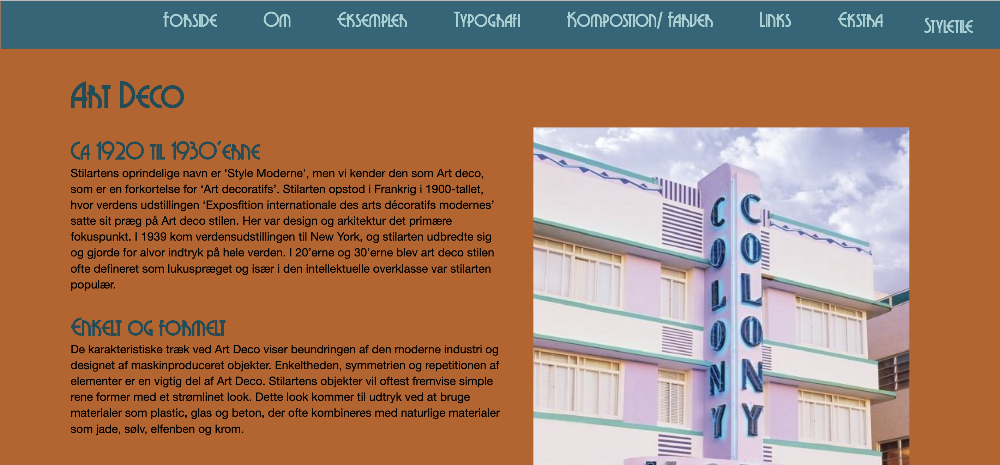

Grundlæggende Web
Hvem vidste at kodning både kunne være sjovt og frustrende på samme tid?
Værktøjer benyttet til dette tema:
At kode for første gang
Dette var for mit vedkommende første gang jeg overhovedet stiftede bekendtskab med kodning. I dette tema lærte vi at opsætte hjemmesider i HTML og CSS. Yderemere benyttede vi også Photoshop til billedebehandling og Adobe Xd til opsætning af billeder og tekst.
Vores studiestartprøve omfattede at vi kunne opsætte HTML strukturen efter et layoutdiagram, med de rigtige id’er og class’es. Siden skulle kunne tilpasse sig forskellige formater og derved være responsiv. Dette klarede vi ved at benytte os af flex-box, der gjorde det muligt at de forskellige elementer på siden ville ligge vedsig henholdvis ved siden af og under hinanden, når man flexede den ind til mobil størelse.
Derudover fik lærte vi at lave en menu, der kunne trykkes på ved at bruge a href, bruge google fonts og fontFace til style teksten der blev brugt i stilart sitet. Yderemere skulle vi lave vores eget favIcon, der skulle repræsentere det site vi have lavet. Disse kompetencer vi fik Grundlæggende web er hele grundlaget for MMD, og de efterfølgende temaer. Hvor at disse færdigheder kun er blevet bygget videre på.